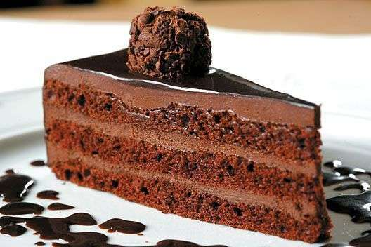

As cinco sobremesas mais consumidas no Brasil.
Bolo - Tradição em cada fatia
O bolo é uma das sobremesas mais queridas do Brasil, presente em aniversários, cafés e festas típicas.

Saiba mais sobre bolo na Wikipédia
Veja também sobre pudim